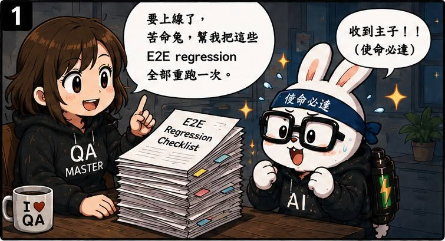
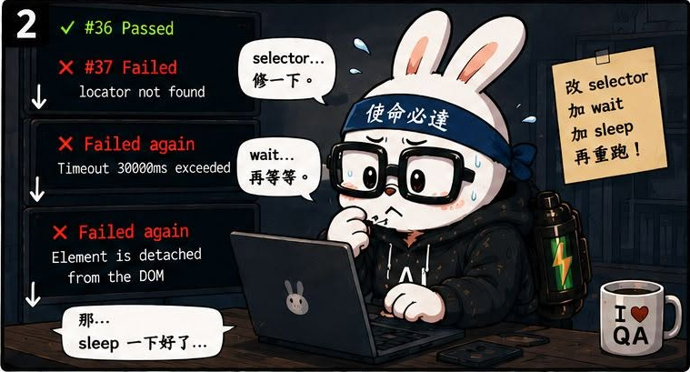
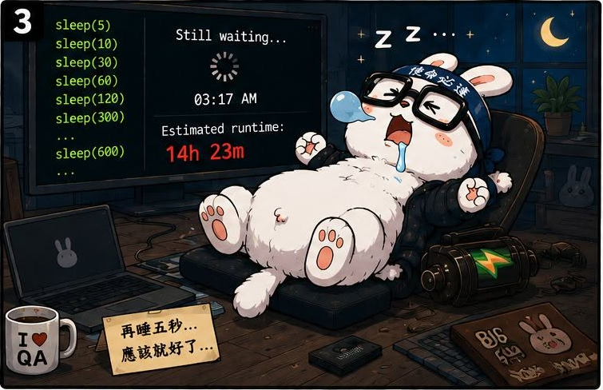
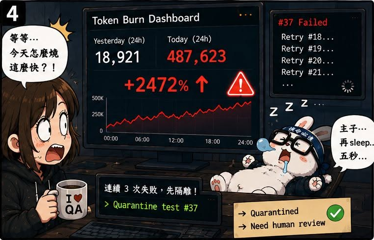

第06話：苦命兔超努力，無效的那種
第 6 / 15 話




AI QA Portfolio
🐰 作者後記
改成 Prompt Chaining 之後，我終於比較容易看見每個步驟到底發生了什麼事。
也因此，我開始發現一些以前藏在黑盒子裡的問題。
這次出問題的是：
Flaky Test。
原本我只是希望苦命兔幫我修自動化測試。
結果牠非常努力，努力到讓人害怕。
🔥 真實案例
當自動化測試失敗時，苦命兔會很認真地嘗試修正。
但問題是：
我沒有告訴它該怎麼處理 Flaky Test。
於是它開始用最直覺的方法修：
加 sleep。
加 wait。
再加 sleep。
再加 wait。
只要測試失敗，它就覺得是不是等不夠久？
是不是再等一下就好了？
結果腳本越修越慢、越修越不穩。
原本要解決 flaky test，最後變成把不穩定包進更多等待時間裡。
這時候我才意識到：
AI 很努力。
但如果方向錯了，它只是更有效率地製造新的問題。
🛠 解決方案
我趕快把 Flaky Test 的處理規則補進家規。
1. 失敗三次後停止
測試失敗時，最多 retry 三次。
如果仍然失敗，不要繼續硬修。
先標註為 Flaky Test，然後執行下一個案例。
最後把 Flaky Test 清單提交給我。
2. 先分析，再修正
針對 Flaky Test，不能直接動手改腳本。
要先分析可能原因：
- 等待條件不正確
- Selector 不穩定
- 資料狀態不一致
- 非同步流程尚未完成
- 測試環境不穩
確認可能原因後，再提出修正方案。
3. 修正後第一次失敗就停下
修正後，如果第一次執行又失敗，不要繼續反覆修改。
停下來。
回報給我。
由人類判斷下一步。
💡 我學到什麼
這一話讓我理解到：
AI 需要的不只是任務目標。
還需要停止條件。
如果只告訴它：
把測試修好。
它就會想盡辦法讓測試通過。
但測試通過，不一定代表測試變好。
有時候只是問題被掩蓋了。
從這一話開始，我更明確地意識到：
治理 AI 不只是告訴它該做什麼，也要告訴它：
- 什麼時候該停下
- 什麼情況要回報
- 哪些修法是不允許的
這些規則，比單純要求它完成任務更重要。
🏷 關鍵能力
- Flaky Test Management
- Stop Condition Design
- Test Automation Governance
- Failure Analysis